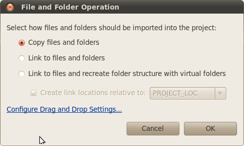

Data may be clicked and dragged into the workbench from other file browsers. When you drop the folder for a project, for instance the 'data' project you will see this dialog:

You should normally choose one of the link options as this avoids copying the data.